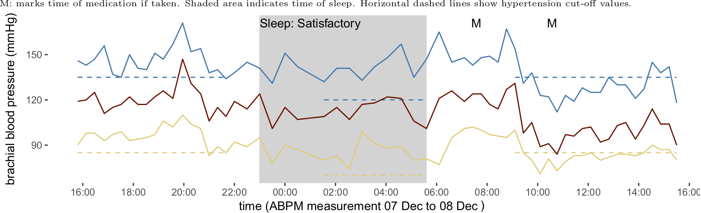
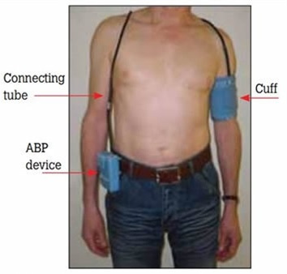

<!-- .slide: id="intro" --> #### MMS Seminar Series 2022 # Blood Pressure and Vascular Function Laboratory <table style="table-layout: fixed; width: 100%; border-bottom: 0px; border-top: 0px"> <tr> <td style="text-align:center"> <br> Dr Mark Butlin</td> <td style="text-align:center"> <br> Dr Isabella Tan</td> <td style="text-align:center"> <br> Dr Karen Peebles</td> <td style="text-align:center"> <br> Prof. Emeritus Alberto Avolio</td> <td style="text-align:center"> <img src="images/people_edward_barin_gs.jpg" width=80px><br> Clinical Assoc. Prof. Edward Barin</td> </tr><tr> <td style="text-align:center"> <img src="images/people_fatemeh_shirbani_gs.jpg" width=80px><br> Fatemeh Shirbani </td> <td style="text-align:center"> <br> Gisele Bentley </td> <td style="text-align:center"> <br> James Cox </td> <td style="text-align:center"> <img src="images/people_kathryn_busch_gs.jpg" width=80px><br> Kathryn Busch </td> <td style="text-align:center"> <img src="images/people_stephen_woodford_gs.jpg" width=80px><br> Dr Stephen Woodford </td> </tr><tr> <td style="text-align:center"> <img src="images/people_vaidehi_desai_gs.jpg" width=80px><br> Vaidehi Desai </td> <td style="text-align:center"> <br> Madison Kane </td> <td style="text-align:center"> <br> Farhan Ahmed </td> <td style="text-align:center"> <br> Janani Viswanathan</td> </tr> </table> <!-- Macquarie Medical School, Faculty of Medicine, Health and Human Sciences, Macquarie University.--> --- <!-- .slide: data-auto-animate --> ### Compliant large arteries #### <img class="r-stretch" src="images/Windkessel_effect.gif"> -- <!-- .slide: data-auto-animate --> ### Stiff large arteries #### <img class="r-stretch" src="images/Windkessel_effect_stiff.gif"> -- <!-- .slide: data-auto-animate data-background-image="images/TrampolineSimpsons.gif" --> ### <span style="color:white">Compliant large arteries</spab> -- <!-- .slide: data-auto-animate data-background-image="images/TrampolineDunkFail.gif" --> ### <span style="color:white">Stiff large arteries</span> -- <!-- .slide: data-auto-animate data-background-image="images/atherosclerosis.gif" data-background-position="right" data-background-size="contain"--> ### *Not* **Athereo**sclerosis #### -- <!-- .slide: data-auto-animate data-background-image="images/arterio.png" data-background-position="right" data-background-size="contain"--> ### **Arterio**sclerosis #### -- <!-- .slide: data-auto-animate --> ### Why is arterial stiffness important? #### Major contributor to the predominant form of hypertension. <img src='images/Nilsson2013.gif' width='55%' align="left"> <p>IDH: isolated diastolic hypertension<br>ISH: isolated systolic hypertension</p> <p class="citation">Nilsson, PM et al. <em>Blood pressure and pulse wave velocity as metrics for evaluating pathologic ageing of the cardiovascular system.</em> Blood Press, 2013, 23:17--30.</p> -- <!-- .slide: data-auto-animate --> ### Why is arterial stiffness important? #### Major contributor to cardiovascular events and death. <img src='images/Vlachopoulos2010.png' width='85%' align="left"> <p class="citation">Vlachopoulos, C et al. <wm>Prediction of cardiovascular events and all-cause mortality with arterial stiffness: a systematic review and meta-analysis</em>. J Am Coll Cardiol, 2010, 55:1318--27.</p> -- ### Arterial stiffness #### Application to disease processes <div class="r-stack"> </div> --- <!-- .slide: data-auto-animate --> ## Measurement -- <!-- .slide: data-background="#373A36" --> <p class="r-fit-text" style="color:white">You can't manage<p> <p class="r-fit-text" style="color:white">what you can't measure.<p> -- <!-- .slide: data-auto-animate --> ### Arterial stiffness measurement #### Paraphrasing Newton: A wave travels faster through a stiffer material than a less stiff material. <img class="fragment" data-fragment-index=1 src="images/PWVslow.gif" width=50% align="left"> <img class="fragment" data-fragment-index=2 src="images/ruler-vibrating-andrew-lambert-photography.jpg" width="50%" align="left"> <p class="fragment citation" data-fragment-index=2>Andrew Lambert Photography</p> -- <!-- .slide: data-auto-animate --> ### Arterial stiffness measurement #### <img src="images/PWVandPTTarm.svg" width=40% align="left"> <p class="citation">Adapted from Butlin, M.; Qasem, A.; Battista, F.; Bozec, E.; McEniery, C. M.; Millet-Amaury, E.; Pucci, G.; Wilkinson, I. B.; Schillaci, G.; Boutouyrie, P. & Avolio, A. P. Carotid-femoral pulse wave velocity assessment using novel cuff-based techniques: comparison with tonometric measurement. Journal of Hypertension, 2013, 31, 2237-2243.</p> -- <!-- .slide: data-background="#373A36" --> <p style="color:white;font-size:1.5em">So how come your GP does not measure your arterial stiffness?</p> <p class="fragment" style="color:white;font-size:1.1em">No direct treatment (other than lowering blood pressure).</p> --- <!-- .slide: data-auto-animate --> <h2 data-id="header">Blood pressure measurement</h2> -- <!-- .slide: data-auto-animate --> <h2 data-id="header">Blood pressure <del>measurement</del> estimation</h2> -- <!-- .slide: data-auto-animate data-background-image="images/BP_Medical Times72_11_1944_Hales.jpg" data-background-position="centre" data-background-size="contain"--> <p class="citation" data-id="ref">Stephen Hales –<br>father of hemodynamics.<br>Medical Times. 1944;72(11):315.</p> -- <!-- .slide: data-auto-animate data-background-image="images/BP_Medical Times72_11_1944_Hales_flipped.jpg" data-background-position="centre" data-background-size="contain"--> <p class="citation" data-id="ref">Modified from<br>Stephen Hales –<br>father of hemodynamics.<br>Medical Times. 1944;72(11):315.</p> -- <!-- .slide: data-auto-animate data-background-image="images/Hale1733_Exp1.jpg" data-background-position="centre" data-background-size="contain"--> <p class="citation" data-id="ref"> Hales, S. Statical essays,<br> containing haemastaticks.<br> Vol. II, 1733.</p> -- <!-- .slide: data-auto-animate data-background-image="images/Hale1733_Exp1_converted.jpg" data-background-position="centre" data-background-size="contain"--> <p class="citation" data-id="ref"> Hales, S. Statical essays,<br> containing haemastaticks.<br> Vol. II, 1733.</p> -- <video data-autoplay src="images/RadialArteryPuncture.mp4" width=87%></video> <p class="citation"><em>Radial artery puncture using the 'Insyte and Angiocath' technique</em> <a href="https://www.youtube.com/watch?v=gHyNZ9r3hH0">https://www.youtube.com/watch?v=gHyNZ9r3hH0</a></p> -- <!-- .slide: data-auto-animate --> ### History of blood pressure measurement #### and blood pressure estimation <p class="citation">M. Butlin, I. Tan, J. Cox, F. Shirbani, K.C. Peebles, J. Zuo, A.P. Avolio (2020) <em>Blood pressure measurement methodologies: present status and future prospects</em> Hypertension Journal, 6(3), 109-116.</p> -- <!-- .slide: data-auto-animate --> ### Non-invasive blood pressure estimation #### Is wrong <p class="citation">Celler, B. G.; Butlin, M.; Argha, A.; Tan, I.; Yong, A. & Avolio, A.<br> <em>Are Korotkoff sounds reliable markers for accurate estimation<br>of systolic and diastolic pressure using brachial cuff sphygmomanometry?</em><br> IEEE Transactions on Biomedical Engineering, Institute of Electrical and Electronics Engineers (IEEE),<br>2021, 68, 3593-3601.</p> -- <!-- .slide: data-auto-animate --> ### Non-invasive blood pressure estimation #### Is wrong <span class="fragment"> <p> Average systolic blood pressure error:<br> 13 mmHg (range -5 to 24 mmHg, n=11)</p> <p> </p> <p> Error is dependent upon:</p> <ul style="margin-left:80px;"> <li>sex</li> <li>heart rate</li> <li>blood pressure</li> <li style="color:#C6007E">arterial stiffness</li> </ul> </span> <p class="citation">Celler, B. G.; Butlin, M.; Argha, A.; Tan, I.; Yong, A. & Avolio, A.<br> <em>Are Korotkoff sounds reliable markers for accurate estimation<br>of systolic and diastolic pressure using brachial cuff sphygmomanometry?</em><br> IEEE Transactions on Biomedical Engineering, Institute of Electrical and Electronics Engineers (IEEE),<br>2021, 68, 3593-3601.</p> -- <!-- .slide: data-auto-animate data-background-image="images/cuff-blood-pressure-measurement.png" data-background-position="left" data-background-size="contain"--> -- <!-- .slide: data-auto-animate --> ### What is your blood pressure? #### Blood pressure has to vary through the day and night <img src="images/ABPM_example1.png" width=100%> <p class="citation">Measurement from the Blood Pressure and Vascular Function Laboratory, Macquarie University.<br></p> -- <!-- .slide: data-auto-animate --> ### What is your blood pressure? #### Blood pressure has to vary through the day and night  <p class="citation">Measurement from the Blood Pressure and Vascular Function Laboratory, Macquarie University.<br></p> -- <!-- .slide: data-auto-animate --> ### What is your blood pressure? #### Blood pressure has to vary through the day and night  <ul class="fragment"> <li>uncomfortable</li> <li>low temporal resolution</li> <li>disturbs sleep</li> <li>requires professional fitting/interpretation</li> </ul> -- <!-- .slide: data-auto-animate --> ### What is your blood pressure? #### Most people don't even know! <p class="citation"><a href="https://maymeasure.com">https://maymeasure.com</a></p> -- <!-- .slide: data-auto-animate --> ### What is your blood pressure? #### Most people don't even know! <img class="r-stretch" src="images/Beaney2019_Table2excerpt.png" align="left"> <p class="fragment">Imagine if everyone was measuring their blood pressure continuously what a difference that would make to diagnosis of hypertension.</p> <p class="citation">Beaney T et al. MMM Investigators. May Measurement Month 2019: The Global Blood Pressure Screening Campaign of the International Society of Hypertension. Hypertension. 2020 Aug;76(2):333-341.</p> --- ## What if we could estimate blood pressure without a cuff? -- ### Cuffless blood pressure estimation #### Some big players in this space <img src="images/logo_Samsung.jpg" width=40% align="left"> <img src="images/logo_Google.jpg" width=40% align="left"> <img src="images/logo_Apple.png" width=40% align="left"> -- <!-- .slide: data-auto-animate data-background-image="images/bubble.jpg" --> -- <!-- .slide: data-auto-animate data-background-image="images/bubble2.png" --> -- <!-- .slide: data-auto-animate data-background-image="images/bubble4.png" --> -- <!-- .slide: data-auto-animate data-background-image="images/bubble3.png" data-background-opacity="0.33" --> <p>Laplace law of a sphere:</p> \begin{equation} \mathrm{pressure} = \dfrac{2 \times \mathrm{surface~tension}}{\mathrm{radius}} \end{equation} <div class="fragment"> <p>Newton's laws:</p> \begin{equation} \mathrm{wave~speed} = \sqrt{\dfrac{\mathrm{pressure~acting~on~material}}{\mathrm{density~of~the~material}}} \end{equation} </div> -- <!-- .slide: data-auto-animate --> ### Cuffless blood pressure estimation #### <img class="fragment" src="images/Butlin_2015c_fig2excerpt.png" width=50% align="right"> <p class="citation">Butlin, M. et al. Pressure dependency of aortic pulse wave velocity in-vivo is not affected by vasoactive substances that alter aortic wall tension ex-vivo Am J Physiol Heart Circ Physiol, 2015, 308, H1221-H1228.</p> -- <!-- .slide: data-auto-animate --> ### Cuffless blood pressure estimation #### <div class="r-stack"> <img src="images/PWVandPTTarm.svg" width=40%> </div> <p class="citation">Adapted from Butlin, M.; Qasem, A.; Battista, F.; Bozec, E.; McEniery, C. M.; Millet-Amaury, E.; Pucci, G.; Wilkinson, I. B.; Schillaci, G.; Boutouyrie, P. & Avolio, A. P. Carotid-femoral pulse wave velocity assessment using novel cuff-based techniques: comparison with tonometric measurement. Journal of Hypertension, 2013, 31, 2237-2243.</p> -- <!-- .slide: data-auto-animate --> ### Cuffless blood pressure estimation #### <div class="r-stack"> </div> <p class="citation">M. Butlin, I. Tan, J. Cox, F. Shirbani, K.C. Peebles, J. Zuo, A.P. Avolio (2020) <em>Blood pressure measurement methodologies: present status and future prospects</em> Hypertension Journal, 6(3), 109-116.</p> -- <!-- .slide: data-auto-animate --> ### Cuffless blood pressure estimation #### <span data-id="header">Existed in 1993!</span> <p class="citation">Louka, K.; Cox, J.; Tan, I.; Avolio, A. P.; O'Rouke, M. F. & Butlin, M. 2021 43rd Annual International Conference of the IEEE Engineering in Medicine & Biology Society (EMBC), IEEE, 2021, 7493-7496.</p> -- <!-- .slide: data-auto-animate --> ### Cuffless blood pressure estimation #### <span data-id="header">Existed in 1993!</span> And was not very good. <img class="r-stretch" src="images/Louka2021Fig2AB.png"> <p class="citation">Louka, K.; Cox, J.; Tan, I.; Avolio, A. P.; O'Rouke, M. F. & Butlin, M. 2021 43rd Annual International Conference of the IEEE Engineering in Medicine & Biology Society (EMBC), IEEE, 2021, 7493-7496.</p> -- <!-- .slide: data-auto-animate --> ### Cuffless blood pressure estimation #### Independent effect of sympathetic activity on vascular smooth muscle <p class="citation">Lindesay, G. Effects of sympathetic nerve activity on the stiffness of conduit arteries (PhD Thesis). Macquarie University, 2013.</p> -- <!-- .slide: data-auto-animate --> ### Cuffless blood pressure estimation #### Independent effect of heart rate on viscoelasticity <p class="citation">Tan, I.; Butlin, M.; S0ronck, B.; Xiao, H. & Avolio, A. Effect of heart rate on arterial stiffness as assessed by pulse wave velocity. Current Hypertension Reviews, 2018, 14, 107-122.<br> </p> -- <!-- .slide: data-auto-animate --> ### Cuffless blood pressure estimation #### Independent effect of pre-ejection period <p class="citation">Adapted from Butlin, M.; Qasem, A.; Battista, F.; Bozec, E.; McEniery, C. M.; Millet-Amaury, E.; Pucci, G.; Wilkinson, I. B.; Schillaci, G.; Boutouyrie, P. & Avolio, A. P. Carotid-femoral pulse wave velocity assessment using novel cuff-based techniques: comparison with tonometric measurement. Journal of Hypertension, 2013, 31, 2237-2243.</p> -- <!-- .slide: data-auto-animate --> ### Cuffless blood pressure estimation #### Independent effect of hypertension <p class="citation">Ng, K.; Butlin, M. & Avolio, A. P. Persistent effect of early, brief angiotensin-converting enzyme inhibition on segmental pressure dependency of aortic stiffness in spontaneously hypertensive rats. J Hypertens, 2012, 30, 1782-90.</p> -- <!-- .slide: data-auto-animate --> ### Cuffless blood pressure estimation #### Person to person variability <p class="citation">Butlin, M.; Shirbani, F.; Barin, E.; Tan, I.; Spronck, B. & Avolio, A. P. Cuffless estimation of blood pressure: importance of variability in blood pressure dependence of arterial stiffness across individuals and measurement sites IEEE Transactions on Biomedical Engineering, Institute of Electrical and Electronics Engineers (IEEE), 2018, 65, 2377-2383.</p> -- <!-- .slide: data-auto-animate data-background="#373A36" --> <p style="color:white">Most cuffless devices ignore the confounders</p> <p style="color:white">believing them to be insignificant.</p> <p style="color:white" class="fragment" data-fragment-index="1">Which some may be.</p> <p style="color:white" class="fragment r-fit-text" data-fragment-index="2">But some confounders <em>are</em> significant</p> <p style="color:white" class="fragment r-fit-text" data-fragment-index="2">and that will make the blood pressure estimate inaccurate.</p> -- <!-- .slide: data-auto-animate data-background="#373A36" --> <p style="color:white" class="r-fit-text">>300 commercial cuffless blood pressure devices.</p> <p style="color:white" class="fragment r-fit-text" data-fragment-index="1">8 of which advertise claims of accuracy.</p> <p style="color:white" class="fragment r-fit-text" data-fragment-index="2">0 of which used the validation standard.</p> <p style="color:white" class="fragment r-fit-text" data-fragment-index="3">1 non-commercial device tested using the validation standard.</p> <p class="citation"></p> <aside class="notes">Watanabe et al. Development and Validation of a Novel Cuff-Less Blood Pressure Monitoring Device. JACC Basic Transl Sci. 2017 Dec 25;2(6):631-642.</aside> -- <!-- .slide: data-auto-animate --> ### Cuffless blood pressure estimation #### <img class="fragment" src="images/bpvf_james_cox_VO2max.jpg" width=30% align="right"> <!-- <p class="citation"></p> --> <!-- <p class="citation">Blood Pressure and Vascular Function Laboratory</p> --> --- ## Cuffless, <em>contactless</em> blood pressure estimation? -- <!-- .slide: data-auto-animate --> ### Cuffless, <em>contactless</em> blood pressure estimation #### We can measure heart rate with a simple webcam <p class="citation">Aarts LA et al. Non-contact heart rate monitoring utilizing camera photoplethysmography in the neonatal intensive care unit - a pilot study. Early Hum Dev. 2013 Dec;89(12):943-8.</p> -- <!-- .slide: data-auto-animate --> ### Cuffless, <em>contactless</em> blood pressure estimation? #### Blood pressure estimation - much more challenging than heart rate <p class="citation">Shirbani, F.; Moriarty, A.; Hui, N.; Cox, J.; Tan, I.; Avolio, A. P. & Butlin, M. Contactless video-based photoplethysmography technique comparison investigating pulse transit time estimation of arterial blood pressure Conf Proc IEEE Eng Med Biol Soc, 2021.<br><img src="images/people_fatemeh_shirbani_gs.jpg" width=10%></p> -- <!-- .slide: data-auto-animate --> ### Cuffless, <em>contactless</em> blood pressure estimation? #### Example waveforms <p class="citation">Shirbani, F. Draft PhD Thesis, 2022.<br><img src="images/people_fatemeh_shirbani_gs.jpg" width=10%></p> -- <!-- .slide: data-auto-animate --> ### Cuffless, <em>contactless</em> blood pressure estimation? #### <p class="citation">Shirbani, F.; Moriarty, A.; Hui, N.; Cox, J.; Tan, I.; Avolio, A. P. & Butlin, M. Contactless video-based photoplethysmography technique comparison investigating pulse transit time estimation of arterial blood pressure Conf Proc IEEE Eng Med Biol Soc, 2021.<br><img src="images/people_fatemeh_shirbani_gs.jpg" width=10%></p> --- <!-- .slide: data-auto-animate --> <h2 data-id="header">Autonomic function measurement</h2> -- <!-- .slide: data-auto-animate --> <h2 data-id="header">Autonomic function <del>measurement</del> estimation</h2> -- <!-- .slide: data-auto-animate --> ### Autonomic function estimation #### <p class="citation"><img src="images/people_vaidehi_desai_gs.jpg" width=10%></p> -- <!-- .slide: data-auto-animate --> ### Autonomic function estimation #### <table> <tr> <th style="text-align:right"> input </th> <th> $\rightarrow$ </th> <th style="text-align:center"> processing </th> <th> $\rightarrow$ </th> <th> output </th> <th> </th> </tr><tr> <td style="text-align:right"> neural afferents </td> <td> $\rightarrow$ </td> <td style="text-align:center"> CNS</td> <td> $\rightarrow$ </td> <td> neural efferents</td> <td> Cannot be measured non-invasively. </td> </tr><tr> <th class="fragment" data-fragment-index="1" style="text-align:right"> proxy input </th> <th class="fragment" data-fragment-index="1"> $\rightarrow$ </th> <th class="fragment" data-fragment-index="1"></th> <th class="fragment" data-fragment-index="1"> $\rightarrow$ </th> <th class="fragment" data-fragment-index="1"> proxy output </th> <th class="fragment" data-fragment-index="1"> </th> </tr><tr> <td class="fragment" data-fragment-index="1" style="text-align:right"> e.g., blood pressure </td> <td class="fragment" data-fragment-index="1"> $\rightarrow$ </td> <td class="fragment" data-fragment-index="1" style="text-align:center"> baroreceptor function </td> <td class="fragment" data-fragment-index="1"> $\rightarrow$ </td> <td class="fragment" data-fragment-index="1"> heart rate </td> <td class="fragment" data-fragment-index="1"> Can be measured non-invasively.<br>Estimation of autonomic function.</td> </tr> </table> --- ### Applications of this area of work #### ##### Arterial stiffness - Clinical measurement (Cardiex AtCor Medical) - Alzheimer's disease (Dr Sumudu Gangoda; Brain Protection Company) <p> </p> ##### Blood pressure - Clinical / consumer measurement (Cardiex AtCor Medical; Blumio; Fledge Innovation Laboratories; Blood Pressure and Vascular Function Laboratory) - Sleep apnoea (Assoc. Prof. Craig Phillips; Dr Peter Burke) <p> </p> ##### Autonomic function - Clinical measurement (Blood Pressure and Vascular Function Laboratory) - Connective tissue disorders (Dr Karen Peebles) -- <!-- .slide: data-auto-animate data-background="#373A36" --> <p class="r-fit-text" style="color:white" data-id="manage">You can't manage<p> <p class="r-fit-text" style="color:white" data-id="measure">what you can't measure.<p> -- <!-- .slide: data-auto-animate data-background="#373A36" --> <p class="r-fit-text" style="color:white" data-id="manage">You can't manage autonomic dysfunction<p> <p class="r-fit-text" style="color:white" data-id="measure">when you can't measure autonomic function.<p> -- <!-- .slide: data-auto-animate data-background="#373A36" --> <p class="r-fit-text" style="color:white" data-id="manage">You can't manage the global hypertension epidemic<p> <p class="r-fit-text" style="color:white" data-id="measure">when you can't measure blood pressure.<p> --- #### MMS Seminar Series # Blood Pressure and Vascular Function Laboratory <table style="table-layout: fixed; width: 100%; border-bottom: 0px; border-top: 0px"> <tr> <td style="text-align:center"> <br> Dr Mark Butlin</td> <td style="text-align:center"> <br> Dr Isabella Tan</td> <td style="text-align:center"> <br> Dr Karen Peebles</td> <td style="text-align:center"> <br> Prof. Emeritus Alberto Avolio</td> <td style="text-align:center"> <img src="images/people_edward_barin_gs.jpg" width=80px><br> Clinical Assoc. Prof. Edward Barin</td> </tr><tr> <td style="text-align:center"> <img src="images/people_fatemeh_shirbani_gs.jpg" width=80px><br> Fatemeh Shirbani </td> <td style="text-align:center"> <br> Gisele Bentley </td> <td style="text-align:center"> <br> James Cox </td> <td style="text-align:center"> <img src="images/people_kathryn_busch_gs.jpg" width=80px><br> Kathryn Busch </td> <td style="text-align:center"> <img src="images/people_stephen_woodford_gs.jpg" width=80px><br> Dr Stephen Woodford </td> </tr><tr> <td style="text-align:center"> <img src="images/people_vaidehi_desai_gs.jpg" width=80px><br> Vaidehi Desai </td> <td style="text-align:center"> <br> Madison Kane </td> <td style="text-align:center"> <br> Farhan Ahmed </td> <td style="text-align:center"> <br> Janani Viswanathan</td> </tr> </table> <!-- Macquarie Medical School, Faculty of Medicine, Health and Human Sciences, Macquarie University.-->